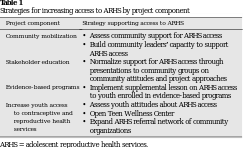

<?xml version="1.0" encoding="UTF-8"?>
<table title="table1" id="table1" class="tabcontent" xmlns="http://www.w3.org/1999/xhtml">
 <tr>
  <td>
   
   <p>corpus-oa-validation/10.1016_j.jadohealth.2016.11.026/tables/table1/table.svg.png</p>
  </td>
  <td>
   <table class="table">
    <caption/>
    <tr>
     <th class="cell">Community mobilization Stakeholder education Evidence-based programs Increase youth access to contraceptive and reproductive health services </th>
     <th class="cell">• Assess community support for ARHS access • Build community leaders’capacity to support ARHS access • Normalize support for ARHS access through presentations to community groups on community attitudes and project approaches • Implement supplemental lesson on ARHS access to youth enrolled in evidence-based programs • Assess youth attitudes about ARHS access • Open Teen Wellness Center • Expand ARHS referral network of community organizations </th>
    </tr>
    <tr>
     <td class="cell">ARHS = adolescent reproductive health services.</td>
    </tr>
   </table>
   <p>corpus-oa-validation/10.1016_j.jadohealth.2016.11.026/tables/table1/table.svg.html</p>
  </td>
 </tr>
</table>
